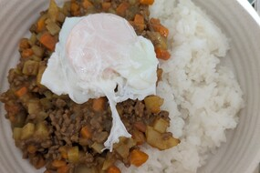

Click on the one that interests you!
-
Sweet and sour pork
-
Boiled fish
-
Simmered dish
-
Okonomiyaki
-
Japanese cooked rice
-
Nikujaga (beef and potatoes)
-

Dry Curry
-
Oyakodon
-
 Candied Sweet Potato
Candied Sweet Potato
Will be posted sequentially!